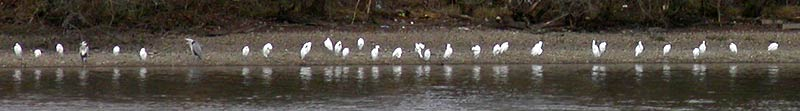

|  |  |
| Home | Recent | Species | Birds | Fish | Mammals | Insects | Fungi | Snaps | Wallpaper | Links | Contact |
What to look for in February
February doesn't seem to be the best month for anything much apart from Little Egrets and Woodpeckers.
In 2006 an incredible 32 Little Egrets were recorded
in February, with this month having the maximum counts in 4 recent years.
In 2017 however there was an even higher January count of 43 Little
Egrets - is it possible to beat that count this month? We are
only counting the birds actually in the reservoir area, but any behind
the dam at the north end are still of interest.
Goldeneye, Goosander and Smew are possible this month as last. With Pintail and Pochard even more likely. Old records show a Velvet Scoter in 1956 and a White Fronted Goose in 1971.
A Slavonian Grebe was seen in 2021.
There are 3 February records of Woodcock and 2 records out of 3 for Jack Snipe.
There are many Mediterranean Gull records for this month.
Great Spotted Woodpeckers are very active, Green Woodpeckers may be heard calling and there is maybe a chance of Lesser Spotted Woodpecker.
A Firecrest was seen in 2013 and another in 2018.
This may be the best time to see Reed Buntings.
Redpolls might be around and Siskins also.
